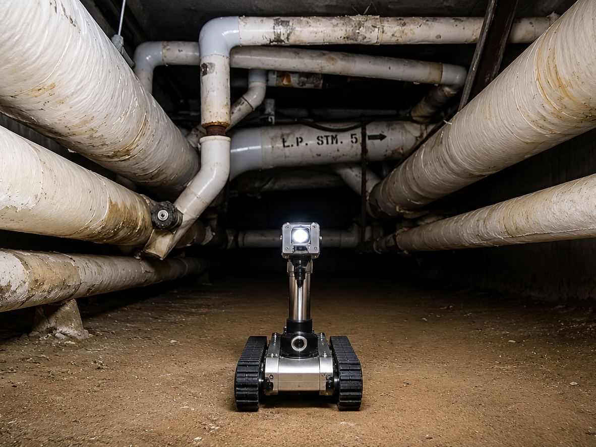

The as-built lies, politely
Decades of patches, repairs and undocumented changes mean the drawings on file rarely match the pipe in the ceiling. Design from those drawings and you design a building that doesn't exist. The fix is to measure first. On the boiler plant replacement at the Albany VA, we built a comprehensive 3D Revit model of the existing plant and all of its piping before designing the replacement, which is what made the construction documents clear enough to keep the contractor out of trouble.
Scanning beats tape measures
In a dense mechanical room, no one can capture every pipe, valve and hanger by hand accurately enough to design against. For the seismic upgrade at the East Orange VA boiler plant, our team ran a complete 3D laser scan of the building and its equipment and turned it into an accurate Revit model, giving the structural and bracing design a precise basis instead of a best guess. The scan is the ground truth everything else is checked against.
The hardest survey we've done
Some existing conditions you can't safely walk into. Replacing the steam and condensate distribution at the Manchester VA meant working inside a 500-foot subbasement utility tunnel, a confined space running beneath active offices and patient care, with stretches only four feet high. Sending surveyors in repeatedly wasn't the answer.
So we deployed a remote-access vehicle with a three-camera system to drive the tunnel and document every steam trap, valve and fitting on video, and used 3D scanning to build a detailed Revit model of the mechanical room. Two things came out of that. First, the design was based on verified conditions instead of assumptions. Second, we handed the tunnel videos to contractors during bidding, so the bids came back accurate and competitive instead of padded against the unknown, and the model itself reduced the ambiguity that drives change orders during construction.
The model earns its keep three times
An accurate existing-conditions model pays back at distinct moments. In design, it catches conflicts on screen instead of in the field. In bidding, it gives every contractor the same clear, accurate picture, which tightens pricing. In construction, it cuts the RFIs and change orders that come from “that's not what was in the field.” The same discipline scales beyond modeling, too: on a 45-building seismic portfolio in California, our team used a tablet-based field application to capture deficiencies building by building, the same principle of digitizing reality before designing against it.
Why “on every retrofit”
Because the failure mode is always the same, the building isn't what the paperwork says, and you find out during construction when it's most expensive to fix. Modeling existing conditions up front moves that discovery into design, where it's cheap. That's the entire argument, and it's why we don't treat it as an upgrade.
